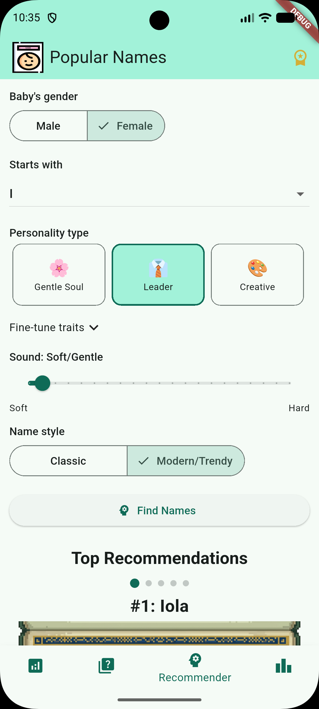
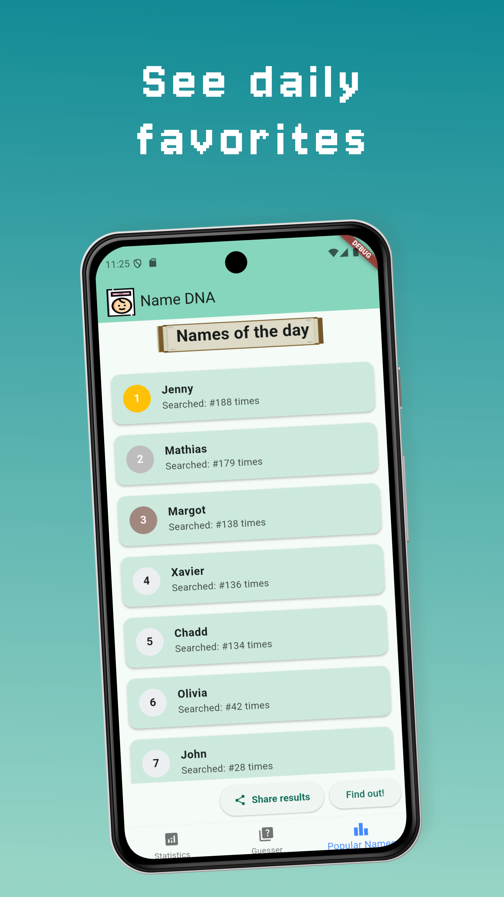
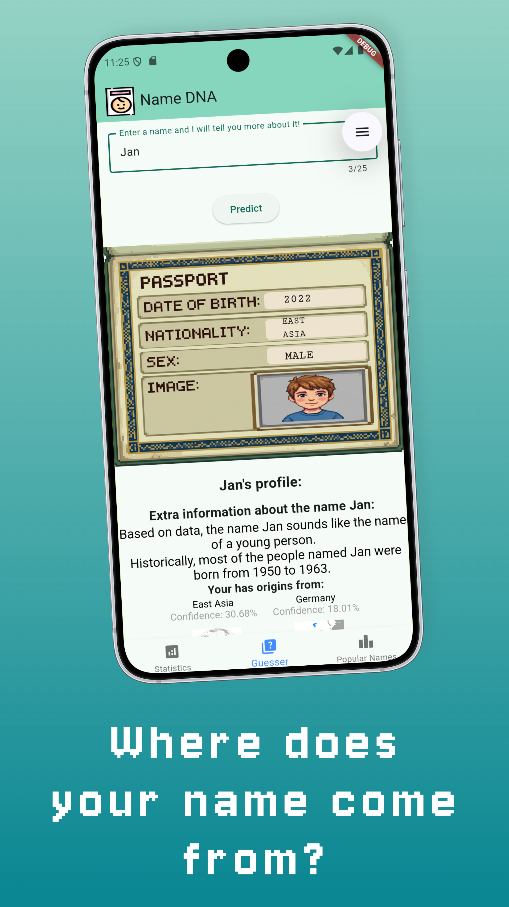

Description of the projects (Programming languages ; Date)
During my years as a Computer Engineer I have taken part in many projects — in groups or on my own.
The most important ones can be found in my
GitHub repositories.
ArPin — Augmented Reality navigation
September 2024
Flutter
Dart
Firebase
Stripe
I created a mobile application that shows points of interest (POI) to its users. This
allows users to navigate while using the camera without the hassle of looking into a 2D
map.
You can download the app and try it yourself:
here.
AR camera viewHome screenTrail view
Popular Names DNA & Baby Names
2025
Flutter
Dart
Firebase
Stripe
Machine Learning
Ever wondered if your name sounds "young" or where in the world it's most popular? I
created a mobile application that uses Machine Learning to decode the characteristics
behind any name. The app predicts the likely gender, year of birth and ethnicity of a
name with AI-powered insights, shows exactly how many people were born with your name
each year, keeps you up to date with the "Top Trending Names" through global
leaderboards, and even maps your baby's desired personality to their name.
You can download the app and try it yourself:
here.

Name recommender system

Daily favourites leaderboard

Where the name comes from
DIMA e-Shop
January 2023
Flutter
Dart
Firebase
We created an e-commerce mobile application called "DIMA e-Shop" with a minimalistic
design look in which the main buying point is the picture of the product. The
application sends orders and payments to a backend server. The code can be found in the
following
link.
Nearby shops on the mapHome screen and purchase flow
Skyline Queries in Big Data
December 2022
Python
Spark
For my thesis I had to implement a new faster algorithm to find Skyline queries in Big
Data in the fastest way possible. I designed a new method that would find the queries in
less than half the time of the fastest query ever designed until then. The code can be
viewed in the following
link.
Skyline operator result (orange) vs all dataset (blue)
Website development — Hatgemini
July 2021
VueJS
NuxtJS
HTML
CSS
We had to document the implementation of a website and develop a fictitious ICT company
called Hatgemini. I was in charge of the back-end, employees and articles web-pages. All
the people inside the website are fetched through an API and stored in the database.
Furthermore I had to implement the chatbot which provides an initial guidance to the
structure of the website. Check the documentation for more information in this
link. The server is down
and not in use anymore.
IoT device — social-distancing prototype
June 2021
nesC
TinyOS
Node-RED
IFTTT
We designed and implemented a software prototype for a social distancing application. The
software sends a notification to the owners' phones after continuous proximity to
one-another. This project uses TinyOS to create the IoT nodes and their payloads,
requires Cooja to simulate (or any similar program) and finally uses Node-RED and IFTTT
to communicate with mobile-phones. The GitHub repository can be found in this
link.
Webserver development - Game reviews
February 2021
Eclipse
JavaEE
HTML
CSS
We had to create a working Webserver to handle submissions of reviews of videogames that
the user had played and creating a leaderboard with the top 10 games of all time.
The code can be found in the following
link. The server is down and not
in use anymore.
Log-in page
Online board game "Santorini"
July 2020
Java
As one of the last projects of my Bachelor's degree we had to recreate a pre-existing
game called
Santorini in which people take turns to move their
workers and build different levels of buildings. All this with the purpose of climbing
up to the third floor of a building as to win at the game. The game is playable both in
CLI-mode (Command Line Input) and GUI (Graphical User Interface). This was one of the
most enjoyable projects that I have been part of.
Below are some screenshots of the game, in order from left to right (GUI): 1- the game
connection, 2- input request to choose a worker, 3- input request to move a worker.
Choosing a workerWhere to move a worker
Electronic fast codifier with Working-Zone Protocol
July 2020
VHDL
Based on the
Working-Zone Encoding
Protocol, which saves on energy-consumption on microcomponents, we had to code
the electronic part which would take care of the encoding. This is all described with
great detail in
my VHDL repository
although it is only in Italian.
For a brief description of how it worked: I implemented a finite state machine which
would request from the RAM-memory the data in all the addresses, and would then find if
the data belonged to one of the Working-Zones or not, flagging it to the RAM and storing
it as well.
Fast Database-search algorithm
August 2019
C
The request was to store, delete and search accounts — and relationships between these
accounts — with certain criteria (such as accounts with the highest number of friends)
in a timely manner. This individual project showed students why time-complexity and
space in memory are highly important topics to tackle every time you build an algorithm.
The abstract data types I implemented to save all the information and get it back in as
little time as possible were: "separate chaining hash-tables" to store the names of
accounts as well as red and
black trees for the information of the numbers of
relationships.